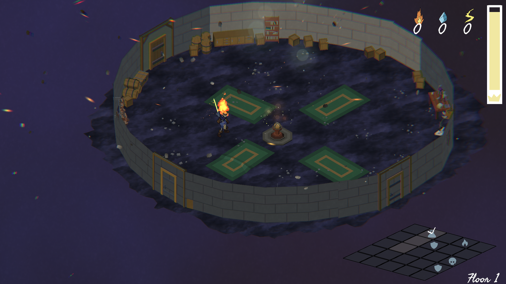

Rogue Light
Roguelight is a unique roguelike game developed in just two weeks during a gamejam using Unity, crafted by a small but passionate team consisting of a 3D modeler, a concept artist, 2 programmers and game designers, and a composer. This project was an intense learning experience that emphasized the importance of effective collaboration and communication. I learned how to work cohesively with others, balancing our creative visions while managing our time efficiently to meet tight deadlines.
The project was very ambitious, where I was tasked with handling enemy AI, the crafting system, procedural generation of the dungeon and general game design itself. All of which in a short deadline was very challenging.
Using GitHub for version control was crucial, as it allowed us to track changes and merge our work seamlessly, minimizing conflicts and maximizing productivity. The composer also used FMOD studio, meaning that integrating the audio to the project seamlessly through builds, while keeping workflow seperate was simple and effective.
One of the most intriguing aspects of Roguelight is its core mechanic of players gradually weakening over time. This design choice not only challenges traditional gameplay dynamics but also encouraged me to think critically about game balance and player engagement. Through iterative testing, I gained valuable insights into refining mechanics to enhance player experience, as well as the impact of art and sound design on gameplay immersion. Overall, this project was an invaluable opportunity for growth, deepening my understanding of game development, teamwork, and the practical use of GitHub in a fast-paced environment.